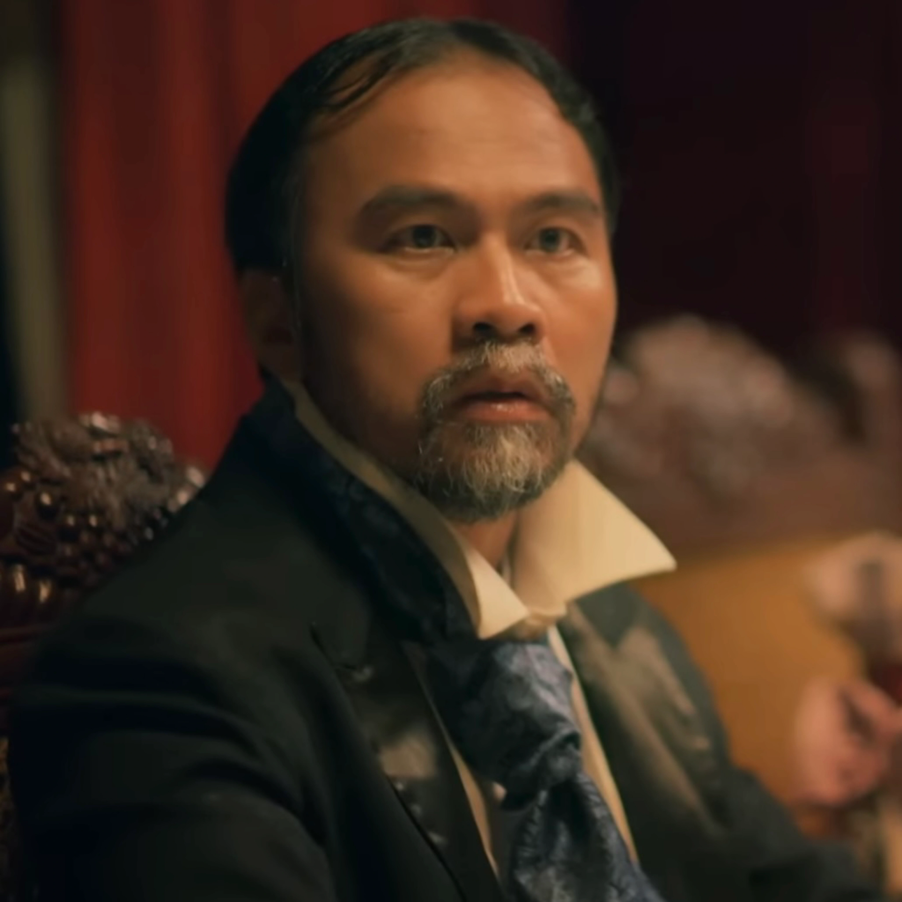
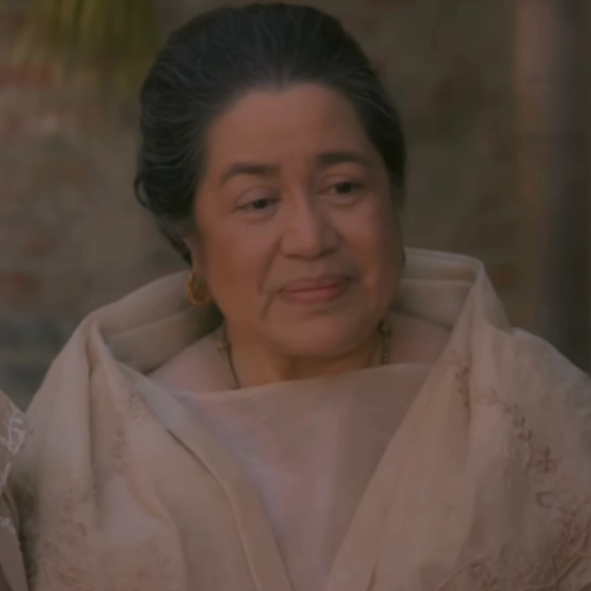

CHARACTERS IN NOLI ME TANGRE
 |
Juan Crisostomo Ibarra y Magsalin |
- He is a smart, rich, young lad who studied in Spain for 7 years
- Main Protagonist
|
 |
Maria Clara
|
- Daugther of Kapitan Tiago
- Very beautiful
- Ibarras love interest
- 2nd Main Protagonist
|
 |
Padre Damaso |
|
 |
Sisa |
- Mother of Basilio and Crispin
- Wife of Pedro
|
 |
Basilio |
- Older brother of Crispin
- One of the main protagonists
|
 |
Padre Salvi |
- 2nd antagonist
- loves torturing people
|
 |
Elias |
- fugitive
- became friends with Ibarra in the later chapters
|
 |
Kapitan Tiago |
- "Father" of Maria Clara
- Richest person in San Diego
|
 |
Pilosopo Tasio |
- Basically "the twons crazy person"
- Is actually very smart, not crazy
|
 |
Crispin |
- Younger brother of Basilio
- dies in Chapter 15
|
 |
Donya Victorina de Espadaña |
|
|  |
Don Tiburcio de Espadaña |
- husbund of Donya Victtorina
- friend of Kapitan Tiago
|
 |
Donya Consolacion |
- Wife of the Alperez
- prefers Spanish culture over Filipino culture
|
|  |
Tiya Isabel |
- Caretaker of Maria Clara
- cousin of Kapitan Tiago
|
 |
Don Rafel Ibarra |
- father of Crisostomo Ibarra
|
 |
Alperez |
- husbund of Donya Consolacion
- cruel
|
Back to top
Sources:
Maria Clara at Ibarra Wiki
https://mariaclaraatibarra.fandom.com/wiki/Maria_Clara_At_Ibarra
Noli Me Tangere Wiki:
https://noli-me-tangere.fandom.com/wiki/Noli_Me_Tangere_Wiki
Alperes
https://personalitylist.com/profile/455009/noli-me-tangere-el-filibusterismo/alperes/
Don Rafael Ibarra
https://www.personality-database.com/profile/500981/don-rafael-ibarra-noli-me-tngere-el-filibusterismo-mbti-personality-type/